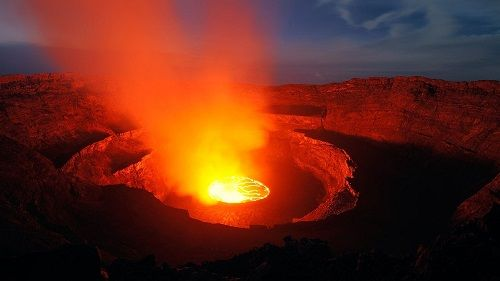

На нашем сайте подобраны наиболее интересные и опасные вулканы со всего мира.
Вулканы разделены по континентам и странам. Подобрать вулкан для рабочего стола можно в разделе
Фотографии. В разделе Новости самые последние
события из мира вулканов.
Есть ли возможность убежать от вулканического извержения?
Согласно новым данным древних извержений есть возможность убежать от крупного извержения вулкана, сообщает
Xata.co.il.
В то же время вулканолог Грег Валентайн из Университета Буффало в Нью-Йорке отмечает, что соревноваться в
скорости с вулканом никому не рекомендует, потому что это не по силам многим.
Ученый совместно со своими коллегами проанализировал погребенные под слоем пепла камни. Им удалось обнаружить,
что распространение смертоносного пепла происходит с небольшой скоростью – 16 -72 км/ч, которую трудновато
поддерживать пешком. На автомобиле это вполне реально.
Естественно, лучше всего от вулкана находиться подальше. Отметим, что самым опасным является не лава, а
пирокластический поток – смесь, содержащая высокотемпературные вулканические газы, пепел и камни, которая
образуется при извержении вулкана. Как известно, такой поток уничтожил римский город Помпеи.По словам
Валентайна, интересным является то, что такие сильные извержения генерируют такие концентрированные,
плотные медленные потоки, опустошающие огромные территории.
Самый молодой вулкан мира Парикутин отметил свое 73-летие
Самому молодому в мире вулкану Парикутин в Мексике минуло 73 года, сообщает Рамблер.Путешествия со ссылкой на
издание MiMorelia
Его появление было замечено местным деревенским жителем 20 февраля 1943года. Тогда из земли вдруг появился
конус, земля задрожала, затем разверзлась, и вырвался столб пара
В дальнейшем вулкан рос и извергался, из него вытекала лава. Его рост и извержение продолжались до марта
1952 года, потом он вдруг потух.
Из-за его активности на несколько лет нарушилась видимость в ближайших окрестностях, лава покрыла территорию
в 18,5 кв. км, в том числе были похоронены села Парикутин и Сан‑Хуан‑Вьехо‑Парангарикутиро. Но все же обошлось
без жертв. Сейчас высота вулкана составляет 424 м.
Альпинистам удалось заглянуть в кипящее жерло африканского вулкана Ньирагонго

Отправиться в свою самую опасную экспедицию к вулкану Ньирагонго решили альпинисты из Новой Зеландии,
сообщает VistaNews.
Экстремалы начали свое путешествие прямо во время извержения и назвали его «Экспедиция в ад». Заглянув в самое
жерло извергающегося вулкана, альпинистам удалось снять необычно красивые и вместе с тем страшные уникальные
кадры бурлящей лавы
Видео набирает популярность среди пользователей интернета, которые комментируют его как ужасное, но очень
красивое зрелище
По словам альпинистов, хотя путешествие и оказалось для них серьезным испытанием, но они довольны своим достижением.
Отметим, что вулкан Ньирагонго расположен на границе Конго и Руанды. Уследить за этим огненным гигантом не
так просто, поэтому на его вершину отправляются специальные экспедиции.
Вулкан Момотомбо в Никарагуа исследуют ученые из США
Для исследования вулкана Момотомбо, в район его расположения приехали сотрудники Геологической службы США и
Никарагуанского института территориальных исследований.
В декабре 2015 года произошло извержение вулкана, который спал 110 лет.15 февраля экспертами были
зафиксированы пожары у подножия горы и изменения в структуре конуса, а также трещины. Сейчас учеными
определяются возможные пути следования магмы на случай нового извержения.
Вулкан является символом Никарагуа, находится на бегу озера Манагуа. Через озеро должно было начаться
строительство Никарагуанского канала, но его заморозили.
Отметим, что в стране очень много вулканов, именно это в свое время стало причиной сооружения Панамского
канала, вернее было отдано преимущество данному проекту.